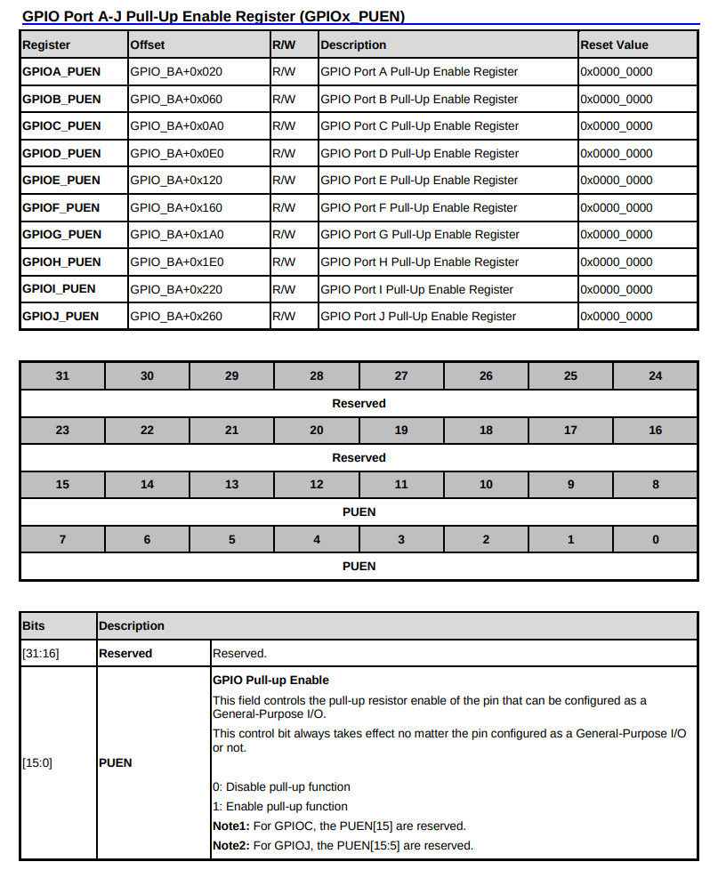
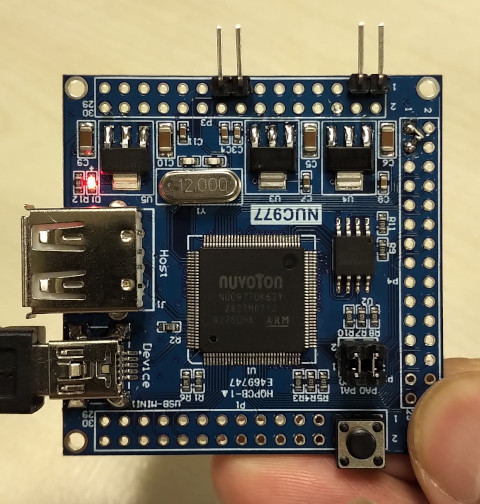
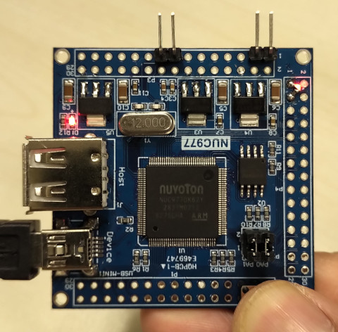

參考資訊：
https://github.com/OpenNuvoton/NUC970_NonOS_BSP
Pull-Up Enable

.equ GPIOD_DIR, (0xb8003000 + 0xc0)
.equ GPIOD_DATAOUT, (0xb8003000 + 0xc4)
.equ GPIOB_DIR, (0xb8003000 + 0x40)
.equ GPIOB_DATAIN, (0xb8003000 + 0x48)
.equ GPIOB_PUEN, (0xb8003000 + 0x60)
.equ CLK_PCLKEN0, (0xb0000200 + 0x18)
.text
.align 2
.global _start
_start: b reset
_undef: b .
_swi: b .
_pabort: b .
_dabort: b .
_reserved: b .
_irq: b .
_fiq: b .
reset:
ldr r0, =CLK_PCLKEN0
ldr r1, [r0]
orr r1, #(1 << 3)
str r1, [r0]
ldr r0, =GPIOB_DIR
ldr r1, =~(1 << 3)
str r1, [r0]
ldr r0, =GPIOB_PUEN
ldr r1, =(1 << 3)
str r1, [r0]
ldr r0, =GPIOD_DIR
ldr r1, =(1 << 6)
str r1, [r0]
loop:
ldr r0, =GPIOB_DATAIN
ldr r0, [r0]
and r0, #(1 << 3)
cmp r0, #(1 << 3)
bne 1f
0:
ldr r0, =GPIOD_DATAOUT
ldr r1, =(1 << 6)
str r1, [r0]
b loop
1:
ldr r0, =GPIOD_DATAOUT
ldr r1, =~(1 << 6)
str r1, [r0]
b loop
.end
完成

